Identidade e Gestão de Acessos
Público Interno
Para o acesso dos colaboradores aos sistemas da CAIXA temos o IAM (Identity and Access Management).
O IAM se divide em 2 sistemas internamente:
-
Gestão de Identidade (SIGAL/SIAAS)
-
Gestão de Acessos (SISET)
Gestão de Identidade (SIGAL/SIAAS)
Dentre as principais responsabilidades do sistema de Gestão de Identidade estão:
-
Sincronismo com as bases autoritativas (Funcionários próprios e terceiros): SISRH, SISCP, SGA, SGE, SAP.
-
Gerenciamento do ciclo de vida dos usuários: Cadastramento, alterações e descadastramento.
-
Sincronismo de senha entre as diversas bases de autenticação: AD, LDAP, OpenLDAP, RACF etc.
-
Automação do processo de concessão de acessos
-
Manutenção do Compliance dos acessos
Bases de Autenticação
A base de autenticação, é responsável por manter a base de usuários, senhas e grupos usadas no processo de autenticação e autorização a sistemas internos, usados pelos colaboradores Caixa.
Elas são mantidas pelo IAM Interno a partir do cruzamento de informações das bases autoritativas e das matrizes de acesso definidas pelos gestores.
As matrizes de acesso definem a relação entre:
-
Funcionalidade e perfis
-
Perfis e tipos de usuários
Mantém árvores de usuário e grupos capazes de armazenar e prover os seguintes atributos:
-
Username (Userid interno no formato x999999 ou CPF para usuários externos)
-
Nome completo
-
E-mail
-
Lista de grupos aos quais o usuário tem acesso
-
Atributos adicionais dependendo da solução (interna ou externa)
-
Externos: Data de nascimento, CEP, Telefone
-
Internos: atributos obtidos das bases autoritativas (SISRH, SISCP, SGA, SGE, SAP), principalmente: CPF, unidade de lotação, tipo de usuário, cargo e função.
-
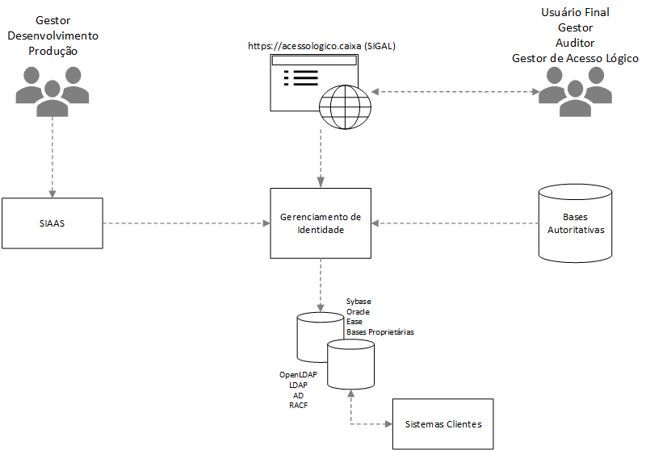
Gestão de Acessos (SISET)
Para o processo de Gestão de Acessos a CAIXA adota o protocolo Openid Connect/OAuth 2.0 para prover autorização a aplicações e serviços. O protocolo está intrinsicamente ligado ao processo de autenticação, no qual, quando bem sucedido, é gerado um Access Token (Token de Acesso) padrão JWT (Java Web Token), contendo os dados do acesso, entre os quais destacamos:
-
Identificação do Usuário
-
Aplicação
-
Data/hora
-
Endereço de acesso
-
Roles
-
Escopos
O Access Token é, então, usado pela aplicação para acesso a APIs ou outras aplicações.
Arquitetura Atual
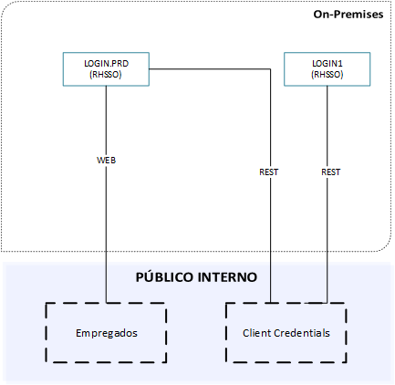
Atualmente é usada a solução Redhat SSO no papel de Authorization Server:
-
Intranet - hospedado no ambiente on-premises e responsável por autenticar e autorizar usuários internos (colaboradores) nas aplicações internas.
-
Serviço - hospedado no ambiente on-premises e responsável por autenticar e autorizar aplicações e APIs, por meio do fluxo de "Client Credentials".
Arquitetura Intermediária
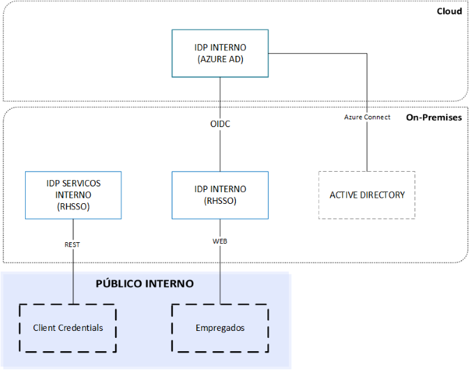
Na arquitetura intermediária as aplicações continuam vinculadas ao RHSSO mas com a autenticação federada ao Azure AD.
A federação acontece utilizando o protocolo OpenId Connect.
Essa integração visa utilizar os recursos de identificação e autenticação no Azure AD e melhorar a experiência do usuário interno nos acessos as aplicações internas.
Arquitetura de Referência
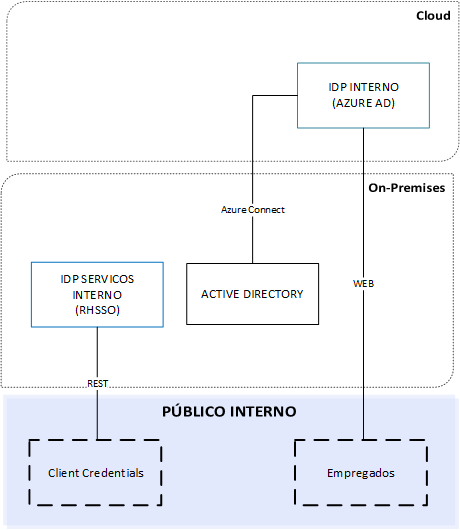
Como Arquitetura de Referência, será utilizada a solução Microsoft Azure Active Directory para colaboradoes e a solução RedHat SSO no papel de Authorization Server para consumo de tokens pelas aplicações em backend.
Essa solução já é responsável pela autenticação dos produtos da Microsoft em uso na CAIXA (sistema operacional, comunicação interna/externa e ferramentas de escritório) e pode fornecer a autenticação via protocolo, protocolo Openid Connect/OAuth 2.0.
-
Intranet (AzureAD) - Ambiente SaaS (Software as a Service) responsável por autenticar e autorizar usuários internos (colaboradores) nas aplicações internas (On-Premises e Cloud).
-
Serviço - Ambiente on-premises e responsável por autenticar e autorizar aplicações e APIs, por meio do fluxo de "Client Credentials".
Todas as novas aplicações já devem ser direcionadas para a Arquitetura de Referência e as exceções devem ser avaliadas pela SUART.
Público Externo
Para o público externo a CAIXA temos o CIAM (Customer Identity and Access Management). Nesse público tanto a Gestão de Identidade quanto a Gestão de Acessos são realizados pela solução pela mesma solução.
A CAIXA adota o protocolo Openid Connect/OAuth 2.0 e SAML 2.0 para prover autorização a aplicações e serviços.
Da mesma forma como explicitado no IAM, o protocolo está intrinsicamente ligado ao processo de autenticação, no qual, quando bem sucedido, é gerado um Access Token (Token de Acesso) padrão JWT (Java Web Token), contendo os dados do acesso, entre os quais destacamos:
-
Manutenção do cadastro
-
Autenticação e autorização
-
Gestão de dispositivos
-
Integração dos serviços usados no Onboarding digital
-
Implementação do módulo de convênio, responsável pelo vínculo entre CPF e CNPJ no acesso a sistemas de convênio.
-
Provimento de adapters compatíveis com protocolo OpenID Connect/OAuth 2.0
Arquitetura Atual
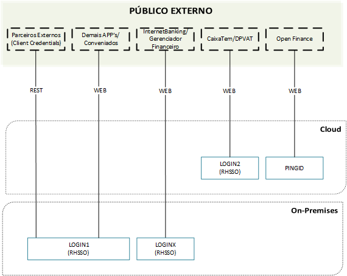
Atualmente é usada a solução Redhat SSO no papel de CIAM para a autenticação nos canais digitais e a solução Ping Identity exclusivamente atendendo o Open Finance Brasil, atendendo os seguintes ambientes:
-
Internet (Login1) - hospedado no ambiente onpremise e responsável por autenticar e autorizar os acessos de clientes nas aplicações de Internet, exceto: apps CaixaTem, DPVAT e Internet Banking (nos acessos com biometria).
-
Internet (Login2) - hospedado na nuvem da Microsoft (Azure) e responsável por autenticar e autorizar os acessos de clientes aos apps: CaixaTem e DPVAT.
-
Internet (LoginX) - hospedado no ambiente onpremise e responsável por autenticar e autorizar os acessos de clientes ao app Internet Banking (SIMOB) exclusivamente quando o acesso é feito com a opção de biometria.
-
Open Finance - hospedado no ambiente Cloud, responsável por comunicação com o ecossistema do Open Finance.
Arquitetura Intermediária
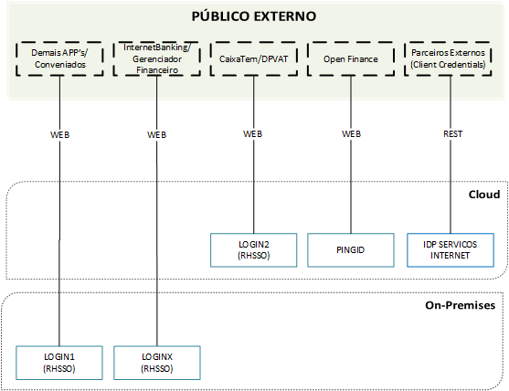
Como arquitetura intermediária, um ambiente novo será inserido para antender as necessidades de autenticação para o público externo no consumo de APIs:
- Serviço - Ambiente em cloud é responsável, responsável por autenticar e autorizar aplicações de público externo para o consumo de APIs, por meio do fluxo de "Client Credentials”.
Arquitetura de Referência
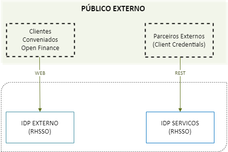
Na arquitetura de Referência é esperado que o CIAM Internet agregue todas as funcionalidades para atendimento do público externo em solução única.
A arquitetura definida prevê o desacoplamento das funcionalidades negociais e demais implementações do core da solução de CIAM.
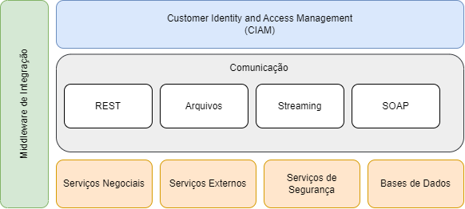
Essa nova abordagem aumenta a resiliência e melhora a eficiência operacional.
A definição da arquitetura foi baseada na validação dos requisitos negociais e técnicos pelo fabricante da solução na versão mais recente, cabendo ainda validação técnica pelas equipes operacionais.
Como premissa para essa nova arquitetura é que a solução sempre utilize as versões mais atualizadas e com todas as proteções de segurança.
Nessa nova arquitetura o conceito de multitenant está estabelecido como padrão para todas as implementações e validações de token em backend pelas aplicações desenvolvidas ou contratadas pela CAIXA.
O multitenant é a possibilidade de validação de tokens de diversos ambientes de IAM, tanto para o público interno quanto externo.
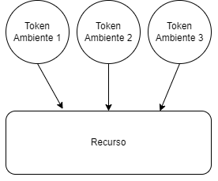
A implementação do multi tenant é feita através da camada da aplicação em que o recurso deve validar a origem e a assinatura de cada ambiente.
Fluxo Decisório do uso de ambientes de Autenticação
Para uma tomada de decisão mais assertiva sobre o direcionamento correto do ambiente para cada público e situação, seguem os fluxos decisórios:
Fluxo Decisório - Arquitetura Atual (Em migração)
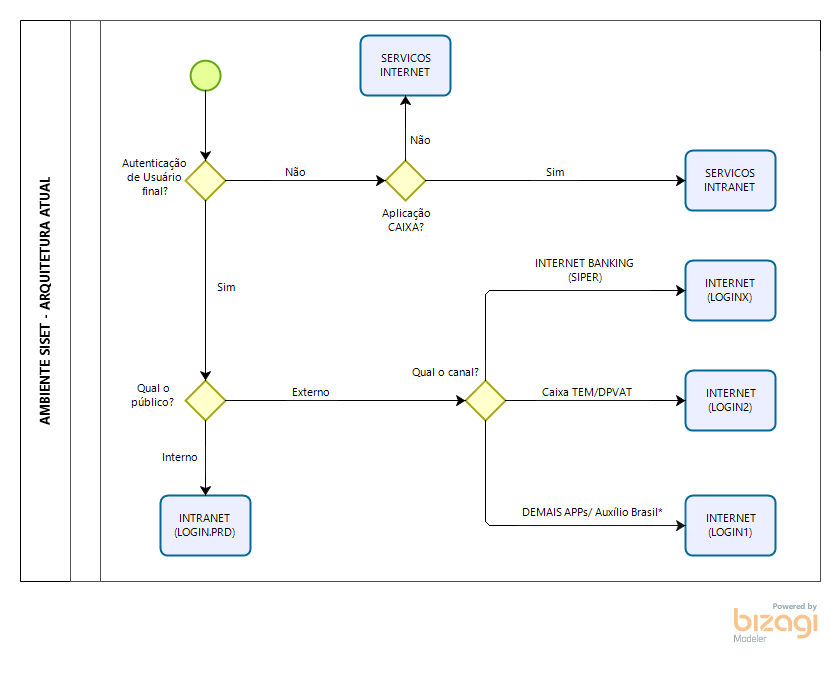
Fluxo Decisório - Arquitetura de Referência
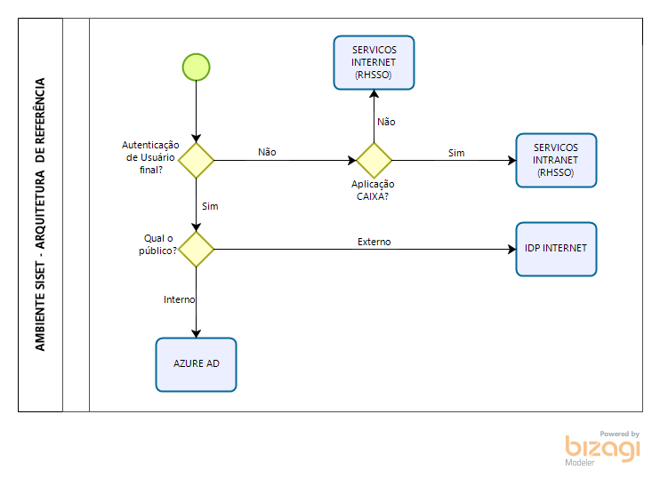
Onboarding Digital
Introdução
O Onboarding Digital é um processo que permite que as empresas integrem seus clientes e usuários de maneira rápida, simples e segura, aproveitando as vantagens da tecnologia. Especificamente no setor financeiro, esse conceito abrange várias etapas, como abertura de contas e contratação de produtos e serviços online, como empréstimos, possibilitando a expansão da base de clientes e o aumento da receita. Para isso, soluções inteligentes que utilizam Inteligência Artificial (IA) e aprendizado de máquina (ML) são empregadas na identificação de documentos, reconhecimento facial e verificação de dados.
Garantindo Segurança e Conformidade
É crucial investir em plataformas robustas e personalizáveis para garantir que o processo de Onboarding digital seja realizado de acordo com os padrões e necessidades da instituição financeira, além de estar em conformidade com a Lei Geral de Proteção de Dados Pessoais (LGPD). É essencial para evitar ações fraudulentas, como fraude documental, que podem resultar em perdas financeiras.
As Etapas do Onboarding Digital
A tecnologia atua em cinco etapas principais do Onboarding digital:
Validação biométrica do cliente com o uso de motores cognitivos e algoritmos especialistas para classificar e checar se as selfies enviadas pelos clientes não apresentam nenhuma irregularidade --- olhar desviado, uma segunda pessoa na imagem ou uma máscara, por exemplo. A solução facematch, compara vários pontos da selfie com a fotografia do documento para comprovar a identidade do solicitante. A foto de si mesmo --- selfie --- é realizada com apoio de orientações guiadas da própria plataforma. Também é possível realizar a captura de biometria de fingerprint (digital) com validação de unicidade biométrica.
Ao enviar documentos pelo app ou site, eles precisam estar legíveis e não podem estar cortados nem rasgados. A tecnologia também tem a capacidade de reconhecer esses desvios e reprovar a solicitação caso os requisitos mínimos não sejam atendidos. O recurso Reconhecimento Ótico de Caracteres (OCR) transforma as imagens em texto para extrair as informações dos documentos enviados e preencher automaticamente os formulários.
Com uso de motor de regras e outras tecnologias, uma série de critérios para validações automáticas são determinadas, como preenchimento correto de formulário, documentos faltantes, erros, incoerências, validades, dispositivo, entre outros. Os dados inseridos são validados em fontes seguras, e se tudo estiver em conformidade, o cadastro do cliente é aceito. Caso contrário, as pendências são notificadas no sistema da instituição financeira.
É fundamental consultar o histórico de uso da identidade digital em bureau e outras instituições financeiras para avaliar se realmente é adequado aceitar a solicitação do cliente. Isso faz parte do Know Your Customer (KYC), conceito que prevê a aplicação de uma série de padrões e procedimentos para estabelecer a identidade do cliente, rastrear e compreender seu comportamento e classificar seu perfil de risco para, assim, combater e prevenir ações ilegais, como fraudes, corrupção e lavagem de dinheiro. Desde a primeira etapa é recomendado atender o KYC para conhecer seu cliente.
Onboarding na CAIXA
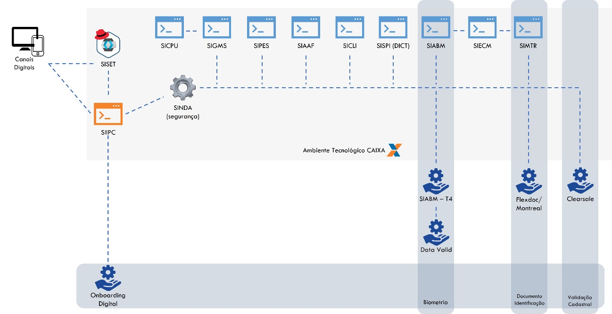
Detalhamento de entradas e saídas de cada sistema, bem como a forma de integração encontram-se disponíveis para consulta na ferramenta ARES.
SISET: sistema responsável pela autenticação dos clientes da CAIXA. Ao identificar que é um novo cliente, fará o redirect para que o SIIPC inicie o processo de Onboarding Digital. Ao final do processo, caso o cliente seja aprovado, será sensibilizado com as informações correspondentes.
SIIPC: sistema responsável por realizar a coleta e validação de informações dos clientes no processo de Onboarding Digital. Nele estão definidas as regras de segurança e as etapas para realização do Onboarding total ou parcial dos clientes. Também contém a base de informações para que o time de antifraude possa atuar.
SIIDA: sistema responsável por orquestrar chamadas de API's a outros sistemas e serviços que atendem o processo de Onboarding Digital. Nessa arquitetura está prevista algumas instâncias exclusivas para atendimento da necessidade de Segurança da CAIXA>
SIGMS e SICPU: sistemas responsáveis pela comunicação/interação (SMS ou Push) com os clientes da CAIXA através do dispositivo móvel pessoal.
SIPES: sistema responsável pela identificação de situações impeditivas na pesquisa cadastral dos clientes.
SIAAF: sistema responsável pela análise e risco de fraude em relação aos dados fornecidos durante a transação e dados históricos previamente coletados.
SICLI: sistema responsável pela criação e atualização de cadastros e armazenamento de informações dos clientes da CAIXA.
SISPI - DICT: sistema responsável por identificação de fraudes relacionadas ao PIX reportadas por outras instituições financeiras.
SIABM: sistema responsável por realizar a coleta e validação de dados biométricos (digital e face) dos clientes.
SIECM: sistema responsável por armazenar as imagens dos documentos e biometrias dos clientes.
SIMTR: sistema responsável pela criação, atualização e gestão do dossiê de imagens do cliente.
SIABM -- T4: serviço responsável por realizar a coleta e validação de dados biométricos (digital e face) dos clientes.
Data Valid: serviço ofertado pelo SERPRO para validação biométrica e de CNH dos clientes no processo de Onboarding Digital.
Flexdoc/Montreal: serviço de captura e validação de documentos de identificação do cliente da CAIXA.
Clearsale: serviço de análise dos dados capturados dos clientes durante o processo de Onboarding Digital.
Onboarding Digital: serviço de onboarding completo e especializado composto por facematch, fingerprint, identificação documental, análise do dispositivo e validação de dados, gerando uma identificação unificada baseada em todos esses fatores e, ainda, uma jornada que minimize o atrito com o cliente. Esse serviço é previsto para utilização em novos clientes que, ainda, não tenham relacionamento com a CAIXA, conforme estratégia da área de Segurança.